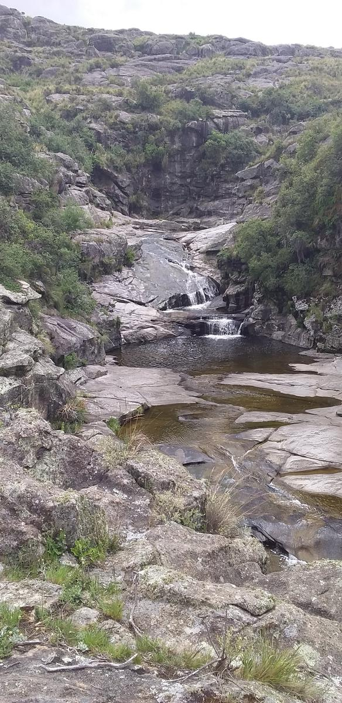
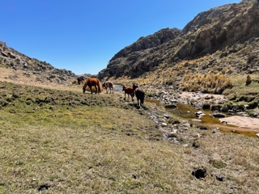
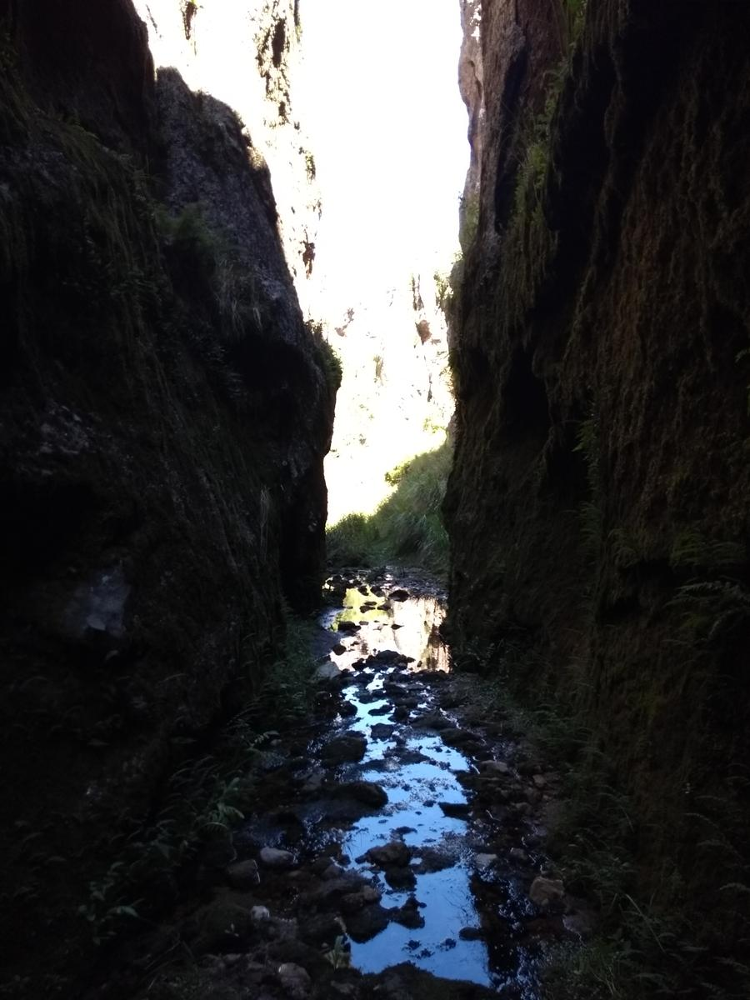

| Trekking |
Inicio |
Descripción |
Tiempo |
Distancia |
Alt Máx |
Alt Mín |
Imagen |
Link |
| Rio Yuspe - Hoya Techada - Cascada Santuario - Quebrada Calderon |
Parador Río Yuspe |
Salida desde el Parador Rio Yuspe hasta la hoya techada, por el rio encajonado. Mas adelante la
cascada "Santuario". A 45minutos más, la "Quebrada del Calderon" con cascadas toboganes. El río más
lindo de Córdoba!. |
8,00 hs |
10,30 kms |
1.765 mts |
1.652 mts |
Río Yuspe |
Wikiloc |
| Los Gigantes, La Retamilla, Río San Guillermo |
Casas Nuevas (Felipa) |
Por el sendero a Los Mimbres, luego a La Retamilla, y desde ahí hasta el puente sobre el Río San
Guillermo. Previamente llevar el vehículo al punto de destino, para poder regresar. |
5,10 hs |
17,11 kms |
1.952 mts |
1.628 mts |
La Retamilla |
Wikiloc |
| Cajones de Pampa de Achala |
Casas Nuevas (Felipa) |
Desde Felipa(parador en medio de Los Gigantes, camping, asadores, un puesto de venta de comida y
domos). Subida por el sendero Norte, vuelta por el costado del Cerro Mogote y bajada por la Cuesta
del Perro. La pampa en el km 8. Cajones (entrada escondida):
1ro Entrada, recorrido hasta el final, vuelta, antes de llegar al inicio giro a la izquierda y
salida por arriba.
2do Entrada y salida por el mismo lugar. A la ida, salida a la intemperie y caminata por montaña
unos metros para llegar a la cueva. Regreso hasta la entrada del cajón. |
8,10 hs |
19,24 kms |
2.387 mts |
1.782 mts |
Cajón |
Wikiloc |
| Cerro Mogote y Cerro La Cruz |
Casas Nuevas (Felipa) |
Cruce del río junto al camping. Caminata sendero de tierra y por piedra. Cruce de un arroyo. En la
bifurcación, giro pronunciado a la izquierda hacia los cerros.
1er cima: Cerro Mogote, 2320 msnm, con un banquito. Dos formas de subirla, una bordeando por un
filo muy peligroso; y la otra por el medio, trepando una piedra alta (en equipo).
2da cima: Cerro La Cruz, 2180 msnm, con una cruz. Caminata por terreno llano. Pago de un permiso por
ingreso a terreno privado (parador La Rotonda). Trepadas sencillas, vista a la zona del Valle de
Los Lisos. Una pared del cerro es murallón para escaladores. Vuelta hasta La Rotonda y bajada para
el río, cruce a Felipa.
|
9,80 hs |
14,26 kms |
2.405 mts |
1.811 mts |
Cajón |
Wikiloc |